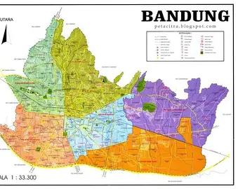

Sejarah
.webp)
Kata Bandung berasal dari kata bendung atau bendungan
karena terbendungnya sungai Citarum oleh lava Gunung
Tangkuban Parahu yang lalu membentuk telaga.
Legenda yang diceritakan oleh orang-orang tua di Bandung
mengatakan bahwa nama Bandung diambil dari sebuah
kendaraan air yang terdiri dari dua perahu yang diikat
berdampingan yang disebut perahu bandung yang digunakan oleh Bupati Bandung, R.A Wiranatakusumah II, untuk
melayari citarum dalam mencari tempat kedudukan kabupaten yang baru untuk mengggantikan ibu kota yang lama di dayeuhkolot.
Berdasarkan filosofi Sunda, kata Bandung juga berasal
dari kalimat Nga-Bandung-an Banda Indung, yang merupakan
kalimat sakral dan luhur karena mengandung nilai ajaran
Sunda. Nga-Bandung-an artinya menyaksikan atau bersaksi.
Banda adalah segala sesuatu yang berada di alam hidup yaitu bumi dan atmosfer, baik makhluk hidup ataupun benda mati.
Sinonim benda mati adalah harta. Indung berarti ibu atau bumi, disebut juga sebagai ibu pertiwi tempat banda berada.
Geografis

Kota Bandung dikelilingi oleh pegunungan, sehingga bentuk
morfologi wilayahnya bagaikan sebuah mangkok raksasa.
Secara geografis kota ini terletak di tengah-tengah
Provinsi Jawa Barat dan berada pada ketinggian sekitar
768 meter di atas permukaan laut dan sebelah selatan merupakan kawasan rendah
dengan ketinggian 675 meter di atas permukaan laut.
Kota Bandung dialiri dua sungai utama, yaitu Sungai
Cikapundung dan Sungai Citarum beserta anak-anak sungainya.
Kondisi tersebut membuat beberapa wilayah Bandung Selatan
cukup rentan terhadap masalah banjir terutama pada musim hujan.
Wisata
Sejak dibukanya Jalan tol cipularang, kota bandung telah menjadi tujuan utama dalam
menikmati liburan akhir pekan terutama dari masyarakat yang berasal dari jakarta
sekitarnya. Selain menjadi kota wisata belanja, kota bandung juga dikenal dengan
sejumlah besar bangunan lama berarsitektur bangunan belanda.
Farm House Lembang
.webp)
Berada di jalur utama Bandung-Lembang, Farm House
menjadi objek wisata yang menarik dan tidak pernah sepi pengunjung.
Kawasan ini menghadirkan nuansa wisata khas Eropa dan memiliki
semua itu diterapkan dalam bentuk spot swafoto instagramable.
Observatorium Bosscha
.webp)
Memiliki beberapa teleskop, anatara lain, Refaktor Ganda Zeiss, Schmidt Bimasakti,
Refaktor Bamberg, Cassegrain GOTO, dan Teleskop surya. Refaktor ganda zeiss adalah
jenis teleskop besar untuk meneropong bintang. Benda ini diletakan pada atap kubah
sehingga saat meneropong digunakan, atap tersebut harus dibuka. Observatorium Bosscha
boleh dikunjungi oleh siapapun, tanpa tiket. Namun, bagi yang ingin menggunakan
teleskop Zeiss, wajib mendaftarkan diri. Untuk instansi atau lembaga pendidikan,
diberikan jadwal hari Selasa sampai Jumat. Sementara itu, kunjungan individu dibuka pada \
setiap hari Sabtu.